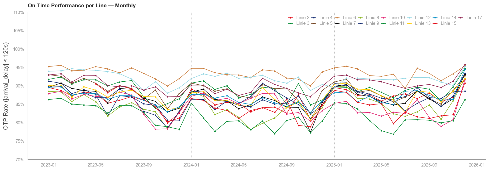
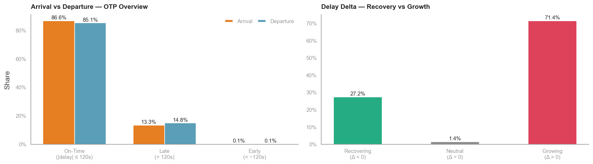
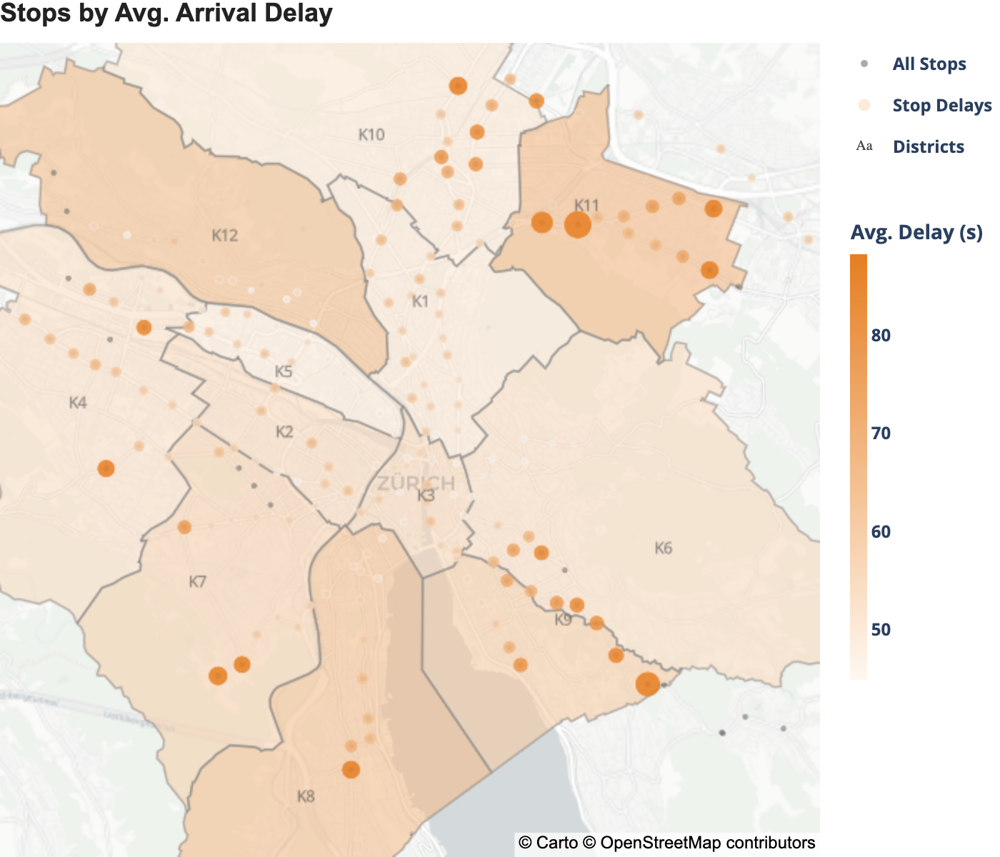
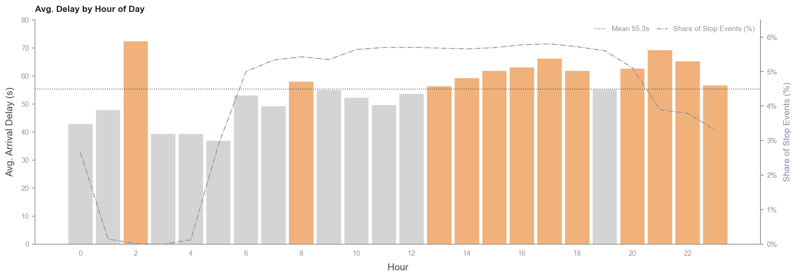

Verspätungsvorhersage im Zürcher Tramnetz
Datengetriebenes Analyse- und ML-Projekt | 2023–2025
87 % OTP seit drei Jahren — dauerhaft unter dem VBZ-Ziel von 95 %
Von der Ursachenanalyse zur Vorhersage
Temporal · Räumlich · Netzwerk · Meteorologie · Events · Zieldefinition
Folgen sie Mustern, die ein Modell lernen kann? — LightGBM, MAE 18,56 s (arrival_delay in Sekunden), −63 % vs. Baseline
Keine einzige Linie erreicht das Ziel — die Lücke zieht sich durch das gesamte Netz

OTP schwankt saisonal, aber der Mittelwert bewegt sich seit 2023 nicht

Drei Erwartungen, die die Daten klar widerlegen
Verspätungs-Hotspots liegen an der Peripherie, nicht im Stadtzentrum

Um 21 Uhr entstehen die höchsten Verspätungen — nicht im Morgenrush

Ohne Puffer im Fahrplan überträgt sich jede Verspätung auf die Folgefahrten — in Zahlen
Vier Schritte, vom ersten Anzeichen bis zum netzweiten Beweis
Hotspots an Endstationen, nicht an zentralen Knotenpunkten. Null Überschneidung mit den dichtest bedienten Haltestellen.
Der Delay wächst entlang der Strecke. L11: Verspätung am Streckenende doppelt so hoch wie am Anfang.
71,3 % aller Haltestellen haben 0 Sekunden eingeplante Standzeit. Kein Puffer, keine Erholung möglich.
Pearson r ≥ 0,85 zwischen aufeinanderfolgenden Halts auf allen 16 Linien. Systematisch, kein Einzelfall.
Nicht Betriebsversagen — strukturell angelegt
Wetter und Grossevents wirken, das Grundproblem bleibt strukturell
Zwei externe Einflussfaktoren sind messbar und erheblich: Schnee (+54s) und Grossevents (bis +66s bei Fachmessen). Doch das Grundniveau der Verspätung bleibt auch bei optimalen Bedingungen konstant hoch. Externe Faktoren verstärken, was intern bereits strukturell angelegt ist.
Trotz Bauphasen, Streckensperrungen und Fahrplanumstellungen hält die VBZ das System bemerkenswert stabil. Die Verspätungslevel schwanken durch diese Eingriffe kaum. Die Ursache liegt nicht in externen Störungen, sondern im Fahrplan-Design selbst.
Drei Iterationen der Modellierung — von der Baseline zum finalen Modell
Die Struktur der Daten ist nichtlinear.
Linie × Haltestelle × Tageszeit × Wetter × Event interagieren auf eine Weise, die kein handcodiertes Modell erfassen kann — und prev_trip_delay liefert ein Echtzeit-Signal für einen Feedback-Loop im Modell.
Von der Baseline über Feature Engineering zum finalen Ensemble-Modell
| Ansatz | Features | MAE (Test) | Verbesserung |
|---|---|---|---|
| Baseline (Stop Mean) | — | 50,0 s | Ausgangspunkt |
| LightGBM v1 — Zeit · Wetter · Netz-Features · kein Live-Signal · MBE +8,3 s | 32 | 45,7 s | −4,3 s |
| LightGBM v2 — +prev_trip_delay · +stop_sequence_pct · Isotonic-Kalibrierung · MBE −0,69 s | 34 | 18,56 s | −31,4 s (−63 %) |
Der Sprung von v1 auf v2 kam nicht durch einen besseren Algorithmus, sondern durch das richtige Signal aus der Analyse: den Kaskadenindikator (prev_trip_delay).
Mittlerer Vorhersagefehler auf einem vollständigen, ungesehenen Testjahr — 63 % unter der Baseline
Kalibrierter Bias: −0,69 Sekunden, nahezu verzerrungsfrei. Trainiert auf Consumer-Hardware in ca. 18 Minuten.
Konkrete Vorhersagen für reale Betriebssituationen zeigen die operative Relevanz
Das Modell kombiniert Tageszeit, Linie, Haltestelle, Wetterlage und den Verspätungsstatus des Vorgänger-Trips zu einer konkreten Sekundenvorhersage. So lassen sich kritische Situationen identifizieren, bevor die Kaskade einsetzt.
Jede Empfehlung ist direkt durch einen Befund aus der Analyse gedeckt
Ein Projekt, das zeigt: Datengetriebene Analyse ist kein akademisches Artefakt — sie liefert operative Entscheidungsgrundlagen.
Umfang der Datenbasis und eingesetzte Technologie
Open Data, AI-Workflow, vollständig reproduzierbar
Verspätungsvorhersage im Zürcher Tramnetz
Datengetriebenes Analyse- und ML-Projekt